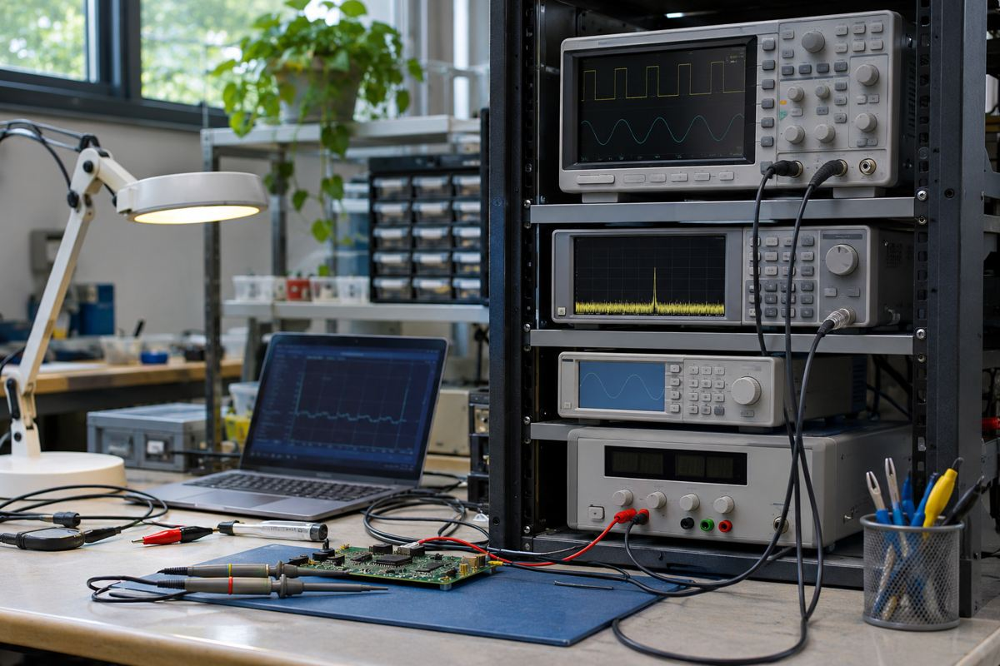
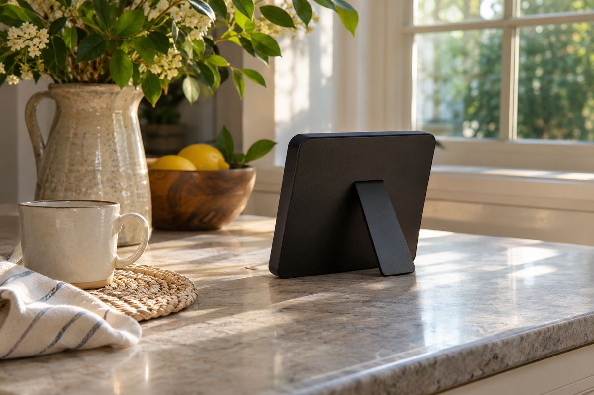
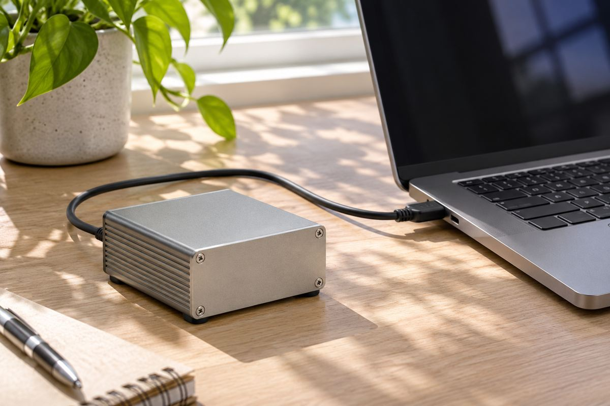
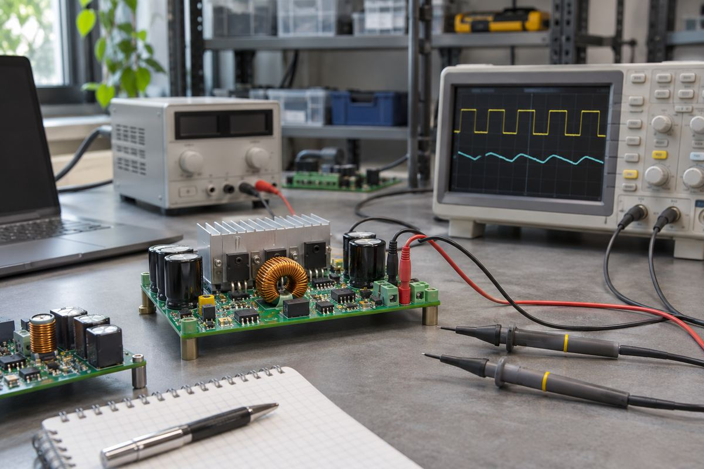
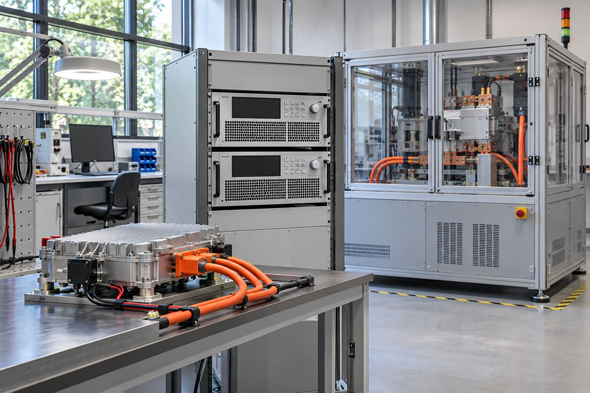
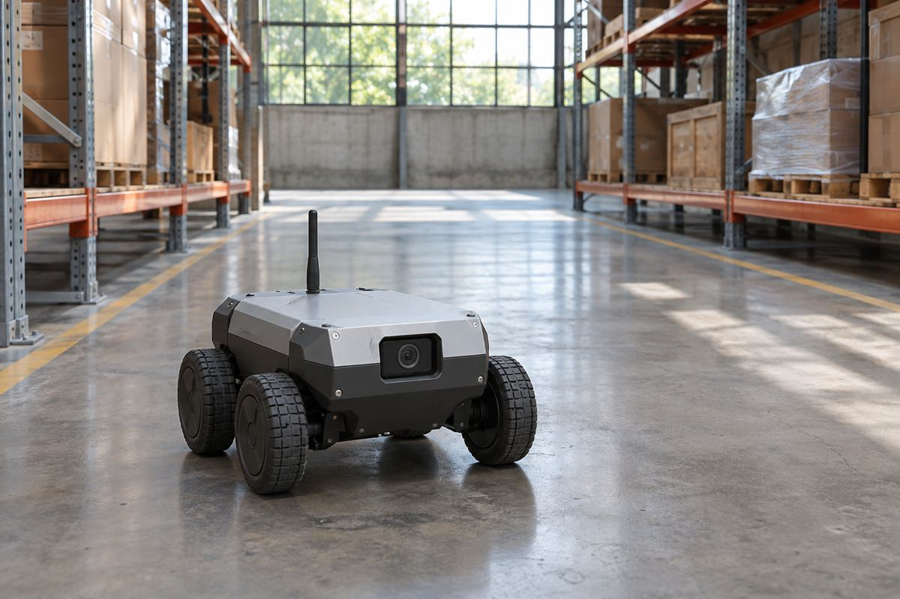
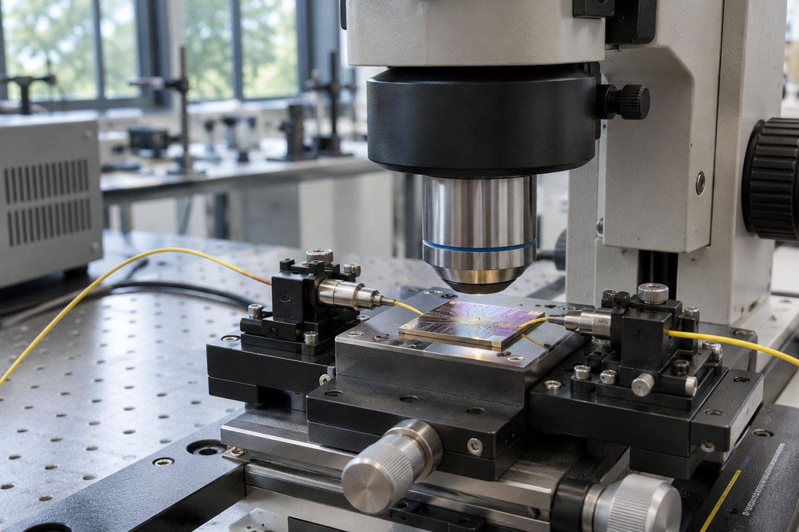
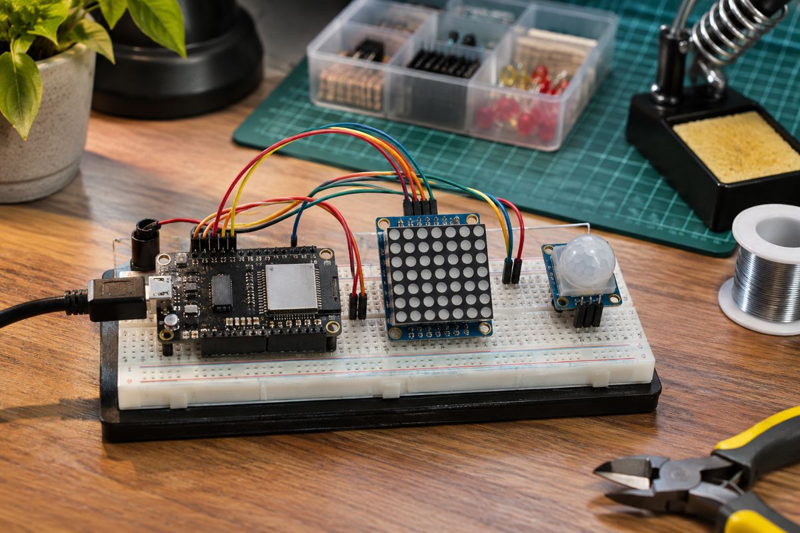
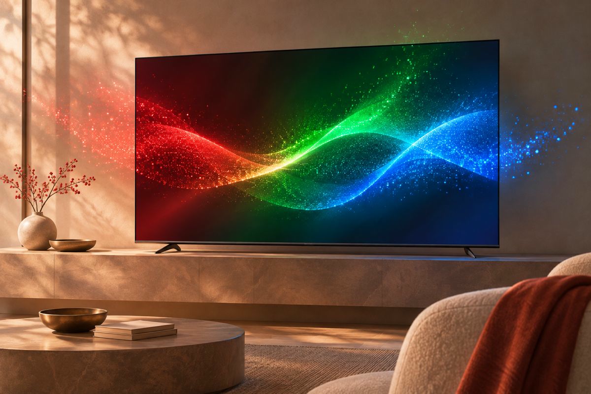
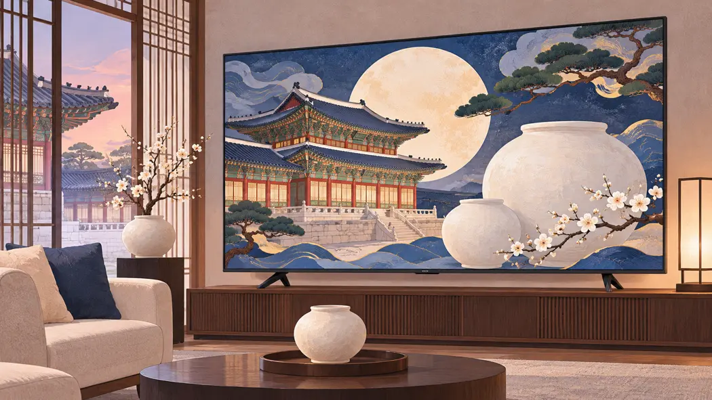

최신 기사
모바일
삼성 갤럭시 Z 폴드8·폴드8 울트라, CES 2027 최고혁신상 선정
수상 발표는 제품의 판매 시작과 달라요. 공개된 사양과 아직 확인되지 않은 가격·지역 출시를 나눠 봤어요.
읽기 ↗최신 기사
모바일
수상 발표는 제품의 판매 시작과 달라요. 공개된 사양과 아직 확인되지 않은 가격·지역 출시를 나눠 봤어요.
읽기 ↗소프트웨어
11월 10일부터 수 주에 걸쳐 배포돼요. 같은 날 모든 픽셀에 같은 기능이 켜지는 업데이트는 아니에요.
읽기 ↗
오디오
품질 검사에서 생산 문제가 발견됐어요. 원래 11월 12일 출시 예정이었지만 지금은 새 날짜를 기다려야 해요.
읽기 ↗









전자기기
11월 12일 예약을 시작했다. 9시간은 안경 한 번 충전 기준, 72시간은 충전 케이스를 포함한 수치다.
읽기 ↗

전자기기
ROG·ProArt·ZenScreen을 한 행사에 묶었으며, 해상도와 주사율은 용도별로 다르다.
읽기 ↗




전자기기
여러 차량 기능을 공통 제어기 계열로 개발하는 구상으로, 모델별 사양과 실제 탑재는 남아 있다.
읽기 ↗
전자기기
One UI 9 일부 기기부터 시작한다. 무료 15GB는 Gmail·드라이브·포토와 공유하는 용량이다.
읽기 ↗

전자기기
공개 SDK와 참조 설계로 센싱·AI·모터 제어를 연결한다. ‘30분’은 완제품 개발 기간을 뜻하지 않는다.
읽기 ↗
전자기기
Cortex-M33 대비 벡터 처리 수치를 제시했다. 완성 칩과 기기의 판매 일정은 별도 단계다.
읽기 ↗
전자기기
미국 발표 가격은 299달러다. 얼굴 인식과 연동 기기의 잠금 상태가 메시지·일정 표시를 좌우한다.
읽기 ↗
전자기기
5월 공개된 윈도우 휴대용 게임 PC가 독일과 미국 판매 단계에 들어갔다. 120Hz 화면과 게임 프레임은 따로 비교해야 한다.
읽기 ↗

전자기기
11월 9일 발표한 전시 계획에는 통신·위치 모듈과 로봇 잔디깎이 시연이 포함됐다. 개별 제품의 판매 일정은 미공개다.
읽기 ↗
전자기기
11월 9일 공정 설계 키트 지원 인증을 발표했다. 제조 직전의 최종 검증은 타워 도구를 사용한다.
읽기 ↗
오디오·개발
Seeed가 개발·복구 경로를 설명했다. 독립 녹음과 AI 전사·요약 기능은 서로 다른 단계다.
읽기 ↗
산업용 연결
TICS100MOD는 연말 공급 예정이다. 함께 발표한 IO-Link 칩의 사전 생산 물량과는 출시 단계가 다르다.
읽기 ↗
영상 제작
센서 면적은 35mm 풀프레임의 약 2.2배다. 65mm라는 이름과 실제 센서 치수는 구분해야 한다.
읽기 ↗
개발 보드
Seeed가 11월 4일 소개한 보드는 통신과 움직임 측정을 함께 다룬다. 두 번째 CAN 채널에는 별도 부품이 필요하다.
읽기 ↗
산업용 반도체
최대 4축 제어용 기능을 통합했다. 칩·평가 보드 공급과 2027년 기능 안전 소프트웨어 일정은 구분된다.
읽기 ↗디스플레이
11월 6일 공개한 UCD 도입 사례는 3월 개관한 시설 이야기다. 화면 크기뿐 아니라 제어·반사·전력 관리가 중요하다.
읽기 ↗
개발 기기
공식 판매가 29.90달러와 ESP32-C61 사양을 확인했다. 원문 출시일은 미공개여서 확인일과 구분했다.
읽기 ↗
웨어러블 개발
11월 6일 개발 현황을 설명했다. 첫 시험 기기는 2027년 초 목표이며 완성품 판매가 아니다.
읽기 ↗
스마트워치
11월 5일 발표한 워치는 99유로부터 지역별 순차 출시 예정이다. 배터리 수치는 가벼운 사용 조건이다.
읽기 ↗무선 오디오
11월 5일 발표, 199유로부터 순차 출시 예정이다. 8시간 재생과 케이스 포함 37시간, 현재 기능과 향후 호출을 구분했다.
읽기 ↗
위치추적 액세서리
11월 6일 판매를 발표했다. 가까이서 방향을 찾는 기능과 주변 기기를 거쳐 위치를 갱신하는 기능은 다르다.
읽기 ↗
통신 인프라
2027년 미국 구축 시작을 목표로 한다. 위성 접속과 지상 기지국, 앞으로의 6G 구상을 구분해야 한다.
읽기 ↗
게임 주변기기
11월 3일 발표한 Signature Edition은 마그네슘 구조와 260g 무게를 내세웠다. 수집 가치와 조작 성능은 구분할 필요가 있다.
읽기 ↗
기업·제품 전략
레노버가 11월 4일 인사를 공개했다. 고급형 제품과 기기 생태계 확대는 방향이며 개별 제품의 출시 확정은 아니다.
읽기 ↗
오디오·한정판
11월 6일 2000개 한정 번들을 발표했다. 일반형과 같은 249유로지만 고음질 기능에는 호환 기기 조건이 있다.
읽기 ↗
PC·확장
Thunderbolt 5 외장 GPU 도크를 공개했다. 단자 모양보다 노트북의 지원 기능과 전체 구성 비용이 중요하다.
읽기 ↗
모니터
ASUS가 24.5인치 FHD OLED 두 모델을 소개했다. 주사율과 픽셀 응답시간, 게임의 프레임률을 나눠 봤다.
읽기 ↗그래픽카드
ASUS가 게임 협업판을 공개했다. 소장 가치와 냉각 구조, 실제 성능을 각각 판단할 필요가 있다.
읽기 ↗PC·메모리
ASUS가 로컬 AI용 UGen 카드를 공개했다. 게임용 카드와 다른 메모리·소프트웨어 조건을 살펴봤다.
읽기 ↗
Windows
마이크로소프트가 반응성과 메모리 개선을 소개했다. 업데이트 효과와 메모리 증설의 역할을 함께 살펴봤다.
읽기 ↗
PC·보안
마이크로소프트가 보안 업데이트의 발견·검증·배포 방식을 설명했다. 수정 개수와 내 PC의 보호 상태는 같은 지표가 아니다.
읽기 ↗
미니 PC
9월 발표에서 11월 공급을 예고한 소형 PC다. 통합 메모리와 실제 판매 구성을 구분해 살펴봤다.
읽기 ↗
촬영·오디오
11월 유럽 판매를 예고했다. 넓은 기록 범위가 마이크 배치와 현장 모니터링까지 대신하는 것은 아니다.
읽기 ↗
휴대용 오디오
소니가 NW-WM1ZM3와 NW-WM1AM3의 유럽 판매를 예고했다. 재료 설명과 청음 평가는 분리해서 읽을 필요가 있다.
읽기 ↗주변기기·산업
매출 증가와 별개로 부품 공급 문제가 다음 분기 전망에 반영됐다. 제품 수요와 공급을 나눠 읽었다.
읽기 ↗오디오
유럽에서 11월 판매를 예고했다. 충전·페어링 부담을 줄이는 대신 USB 오디오 호환성과 개방형 구조를 살펴봐야 한다.
읽기 ↗게이밍 오디오
90도 단자로 가로 화면 게임의 케이블 간섭을 줄이는 설계다. PC 전용 기능과 방수 등급의 범위를 구분해야 한다.
읽기 ↗
스마트폰 카메라
공식 발표의 최고 표현에는 평가한 기기라는 범위가 붙는다. DXOMARK 원문에서는 장점과 어두운 환경의 한계가 함께 확인된다.
읽기 ↗
유통·구매 조건
11월 4일 공개한 혜택은 영국 조건이다. 결제 할인·보상판매·추후 캐시백의 차이와 서로 다른 마감일을 읽어야 한다.
읽기 ↗반도체
11월 3일 발표한 3분기 실적은 9월 26일 종료 기간의 결과다. 데이터센터·PC·게임의 서로 다른 수요를 나눠 읽었다.
읽기 ↗
웨어러블
삼성전자는 11월 3일 갤럭시 링 지원을 발표했다. 미국 FDA 기록과 제품 공지를 함께 읽어 기능 범위와 배포 시점을 구분했다.
읽기 ↗
확장현실
Google이 10월 28일 공개한 일정상 일본 주문은 11월 2일 시작된다. 유선 연결과 앱 지원 범위가 실제 활용을 좌우한다.
읽기 ↗노트북
Apple이 10월 28일 발표한 14·16인치 PROLED XDR 모델은 M5 Pro 또는 M5 Max를 쓴다. 화면에 붙은 숫자와 작업 환경을 함께 봐야 한다.
읽기 ↗데스크톱
Apple은 10월 27일 M6를 탑재한 24인치 iMac을 공개했다. 칩의 세대 변화와 책상 위 구성을 함께 따져봤다.
읽기 ↗태블릿
새 iPad mini는 A20 Pro와 OLED를 탑재했다. 작은 태블릿에서 화면 크기, 반사와 이동 중 연결을 함께 고려할 만하다.
읽기 ↗디스플레이
삼성전자가 기술 소개 영상을 공개했다. RGB 광원과 화면 처리, 표면 특성은 각각 다른 문제를 다룬다.
읽기 ↗
소프트웨어
Apple이 개발자 프리뷰를 공개했다. 사용자가 모든 앱 기능을 즉시 음성으로 쓸 수 있다는 뜻은 아니다.
읽기 ↗업데이트
iPhone부터 Mac·Watch까지 개발자 시험 단계가 시작됐다. 베타 알림은 정식 업데이트 권고와 다르다.
읽기 ↗
오디오
소니가 기존 휴대용 스피커에 새 색상을 더했다. 배터리와 방진·방수 표기에는 각각 시험 조건이 붙는다.
읽기 ↗

오디오
Samsung Mobile Press가 Galaxy Buds On의 미국 출시를 알렸습니다. 오픈이어 청취 경험을 강조한 제품입니다.
읽기 ↗